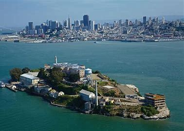

History
Alcatraz Island is one of San Francisco's most iconic landmarks, known for its infamous federal prison which operated from 1934 to 1963. The island has a rich history dating back to its discovery in 1775 by Spanish explorer Juan Manuel de Ayala. Before becoming a federal prison, it served as a military fort and a military prison.
Today, Alcatraz Island is a popular tourist attraction managed by the National Park Service, offering visitors a glimpse into its intriguing past through guided tours and exhibits.
Visitor Information
- Hours: Open daily from 9:00 AM to 6:30 PM.
- Admission: Tickets required. Prices vary for adults, children, and seniors.
- Facilities: Visitor center, restrooms, and a gift shop are available.
- By Boat: Accessible via ferry from Pier 33 in San Francisco. Tickets can be purchased online or at the pier.
- Public Transportation: Easily reachable by bus, cable car, and streetcar to Pier 33.
Alcatraz Island Gallery
